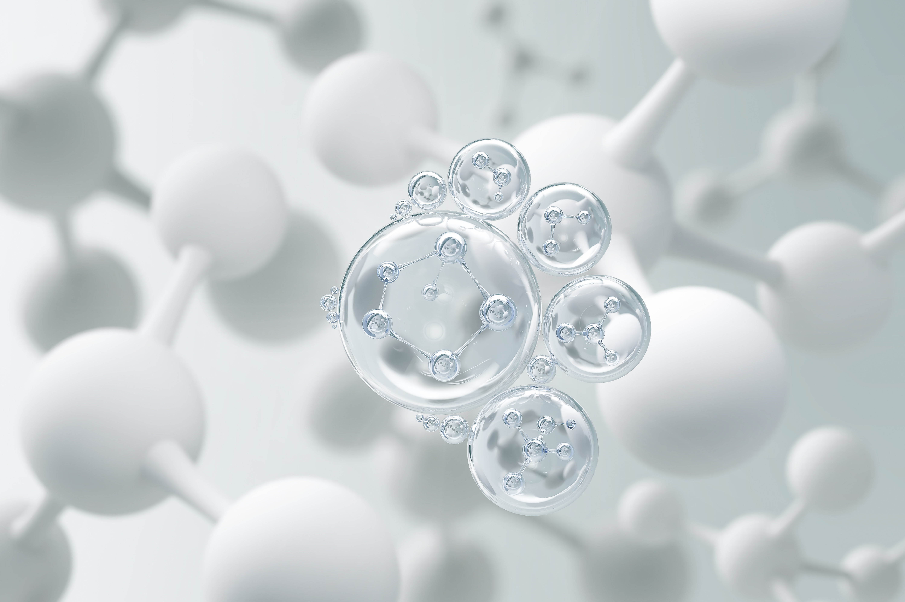

NEXAGEN은 세포 재생의학 원천 기술로
인체의 자연 복원력을 가속합니다
NEXAGEN은 인체 세포의 재생 능력에서 출발합니다.
줄기세포 기반 원천 기술과 정밀 면역 제어 플랫폼을 결합해, 손상된 조직이 스스로 회복하는 과정을 과학적으로 가속합니다.
우리는 임상 데이터와 분자 메커니즘의 접점에서 차세대 재생의학의 경계를 넓혀 나갑니다.
과학적 엄밀성과 임상적 실효성을 동시에 추구합니다
자가·동종 줄기세포를 활용한 조직 재생 플랫폼. 손상된 연골, 심근, 신경 조직의 회복을 임상 수준으로 구현합니다.
CAR-T 및 NK 세포 엔지니어링을 통해 자가면역 질환과 암세포에 대한 정밀 표적 치료를 개발합니다.
혈중 세포외 소포 및 cfDNA 분석을 통해 재생 치료 반응성을 사전 예측하는 진단 플랫폼을 구축합니다.
NEXAGEN의 4단계 재생 프로토콜
환자의 혈액 및 조직 샘플로부터 목표 세포군을 분리·정제합니다. 단일세포 RNA 시퀀싱 기반의 세포 상태 지도를 작성해 재생 가능성을 정밀 평가합니다.
세포 상태 분석 결과를 바탕으로 성장인자 조합, 스캐폴드 구조, 배양 조건을 최적화합니다. AI 기반 시뮬레이션으로 프로토콜의 효능을 사전 검증합니다.
GMP 등급 세포 제제를 임상 환경에 적용하고, 영상 바이오마커와 세포외 소포 농도를 주기적으로 추적하여 재생 경과를 실시간 평가합니다.
축적된 임상 데이터를 머신러닝으로 분석해 프로토콜을 지속 개선합니다. 각 환자의 반응 데이터가 다음 세대 재생 알고리즘에 반영됩니다.

국제 학술지에 발표된
NEXAGEN의 핵심 연구
세포외 소포를 매개로 한 조직 재생 가속 메커니즘 규명
줄기세포 유래 사이토카인의 면역 조절 효과에 관한 임상 연구
3D 오가노이드 모델을 활용한 신장 재생 프로토콜 최적화
미토콘드리아 기능 회복 기전을 통한 노화세포 재프로그래밍
CAR-T 세포 치료와 줄기세포 병용 요법의 시너지 효과
연골 손상 모델에서의 줄기세포 생착 최적화 연구